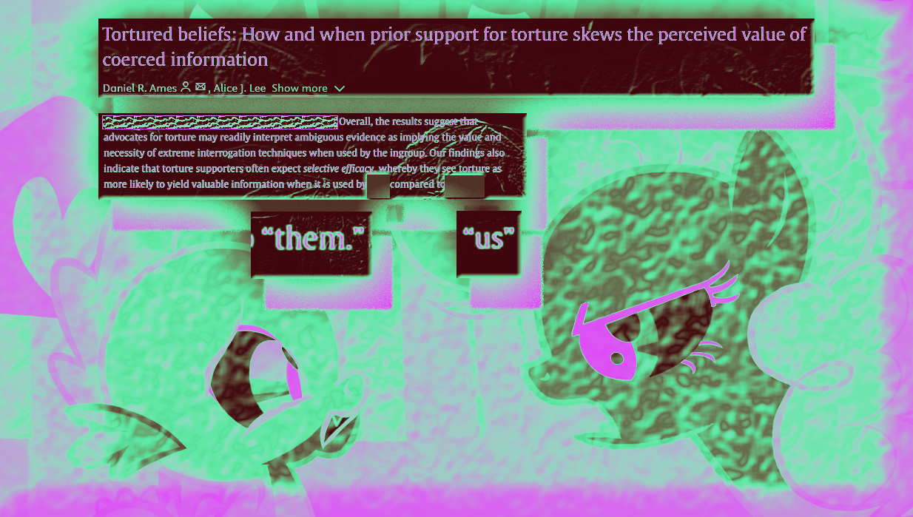

My Little Pony is great.

Did they really do an episode all about how paranoia can really originate from a personality trait as opposed to a plot where
everyone is out to get you? Yes. yes they did. and did they also describe how wonderfully stupid it is to torture someone for
information when there is nothing to be gained? yes. they did that also. this was an image i made after researching some
of that type of stuff. i find it amusing.